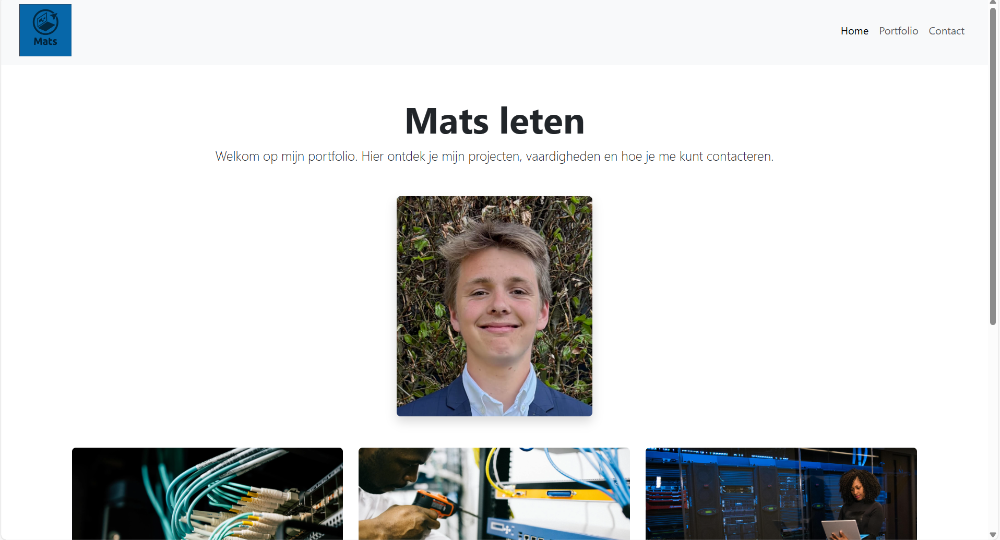

Een eigen portfolio website maken

Ik maakte mijn eigen portfolio‑website met HTML, CSS en Bootstrap. Op deze site toon ik mijn projecten en geef ik korte uitleg bij wat ik gedaan heb.
Bootstrap hielp om de pagina netjes en responsief te maken. Met CSS gaf ik de website mijn eigen stijl. Zo kreeg ik een overzichtelijke en moderne site die goed werkt op computer en smartphone.
Door dit project leerde ik hoe je een website stap voor stap opbouwt. Ik snap nu beter hoe HTML de structuur geeft, CSS zorgt voor de vormgeving en Bootstrap het makkelijker maakt om alles netjes uit te lijnen.
Door dit project leerde ik hoe je een website stap voor stap opbouwt. Ik snap nu beter hoe HTML de structuur geeft, CSS zorgt voor de vormgeving en Bootstrap het makkelijker maakt om alles netjes uit te lijnen.
Het gaf me vertrouwen om zelf websites te maken en aan te passen.
| Onderdeel | Score |
|---|---|
| HTML | 8/10 |
| CSS | 9/10 |
| Bootstrap | 7/10 |
| intresse | 5/10 |
| Totaal | 29/40 |